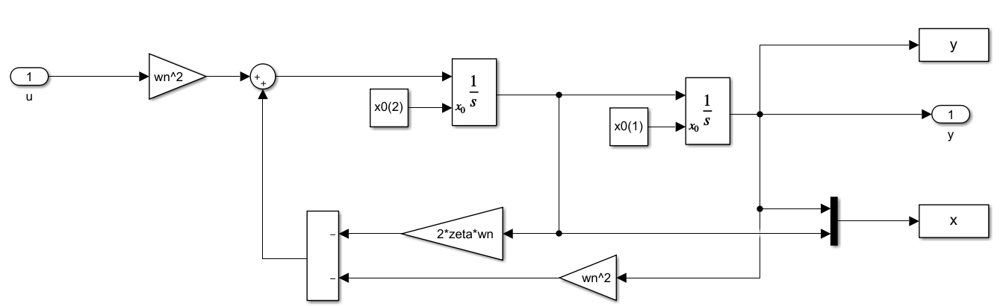
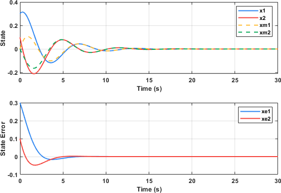
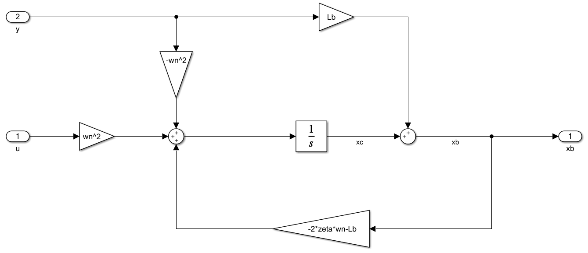
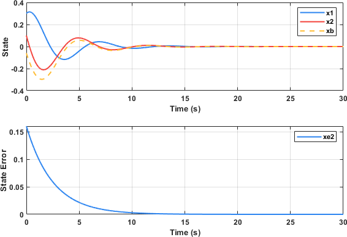

全维状态估计器
设线性时不变被控对象的状态空间表述为：
\[\begin{split}\left\{
\begin{aligned}
\dot{\mathbf{x}} &= A \mathbf{x} + Bu \\
y &= C \mathbf{x}
\end{aligned}
\right.\end{split}\]
据此，构建相同的理论模型：
\[\begin{split}\left\{
\begin{aligned}
\dot{\hat{\mathbf{x}}} &= A \hat{\mathbf{x}} + Bu \\
\hat{y} &= C \hat{\mathbf{x}}
\end{aligned}
\right.\end{split}\]
在该理论模型中，带帽子的变量（如 \(\hat{x}\) ）表示估计值。由于是理论模型，其所有信息都可以通过计算机获得。理论模型和被控对象输入相同的 \(u\) 时，原则上两者的响应相同，因而状态和输出都应当相同。然而实际上，由于被控对象和理论模型初始状态的偏差、理论模型的建模误差、被控对象的额外扰动、传感器的测量噪声等因素的影响，实际输出和理论输出并不相同，因而状态也不相同。
When in trouble, use feedback 。为了解决模型之间的差异，遵循这个控制的金科玉律，对理论模型引入反馈进行矫正，令：
\[\mathbf{\dot{\hat{x}}} = A\hat{\mathbf{x}} + { B}u + {L}\left( {y - \hat y} \right)\]
此时状态的估计误差 \({\mathbf{\tilde x}} = {\mathbf{x}} - {\mathbf{\hat{x}}}\) 满足：
\[\mathbf{\dot{\tilde{x}}} = \left( A - LC \right) \mathbf{\tilde{x}}\]
于是，只要合理设计 \(L\) 令 \(\left( A - LC \right)\) 所有特征值的实部均小于零即可使状态估计误差收敛到零，即状态估计值趋近于真是状态。
状态估计器 \(L\) 的设计与状态反馈 \(K\) 的设计完全相同，考察数学关系：
\[\left| {{A} - {LC}} \right| = \left| {{{\left( {{A} - {LC}} \right)}^T}} \right| = \left| {{{A}^T} - {{C}^T}{{L}^T}} \right| \leftarrow \left| A - BK \right|\]
即：状态观测器与控制律之间存在对偶关系，设计时只需分别将 \(A\) 、 \(C\) 、 \(L\) 置后采用与状态反馈相同的方法进行极点配置（特征值设计）。
下面给出一个全维状态估计器的例子。
设弹簧-质量-阻尼系统的状态空间为：
\[\begin{split}\left\{
\begin{aligned}
\dot{\mathbf{x}} &= \begin{bmatrix}
0 & 1 \\
-\omega_n^2 & -2\zeta \omega
\end{bmatrix}
\mathbf{x} + \begin{bmatrix}
0 \\ \omega_n^2
\end{bmatrix}u \\
y &= \begin{bmatrix}
1 & 0
\end{bmatrix}\mathbf{x}\
\end{aligned}
\right.\end{split}\]
其中， \(\omega_n=1 {\rm rad/s, } \zeta=0.3\) ，基于Simulink搭建被控对象如图所示

为了状态估计能够快速收敛，设的阻尼系数 \(\zeta=0.7\) ，对应极点为 \(-0.70\pm0.71j\) ，进而 \(L=\left[0.80,\, -0.48\right]\) 。带入仿真，观察状态的实际值和估计值如下图所示：

第一个子图实线为真实状态，虚线为状态估计值，可见两者在大约5s后趋于一致。第二个子图则表示两个状态的估计误差，同样可以反应状态估计值的误差随时间收敛到零，状态估计值趋于真实值。
降维状态估计器
上面介绍的状态估计器称之为全维状态估计器，因为它对系统的所有状态都进行了估计。然而，在一些情况下，系统的输出就是系统的某一个状态，能否直接利用这个状态，仅对其他状态进行估计呢？这时就需要用降维状态估计器。
以单输入单输出系统（SISO，Single Input Sigle Output）为例，将其状态空间方程拆解为：
\[\begin{split}\left\{ {\begin{array}{*{20}{l}}
{\left[ {\begin{array}{*{20}{c}}
{{{\dot x}_a}} \\
\dot{\mathbf{x}}_b
\end{array}} \right] = \left[ {\begin{array}{*{20}{c}}
{{A_{aa}}}&{{{A}_{ab}}} \\
{{A_{ba}}}&{{{A}_{bb}}}
\end{array}} \right]\left[ {\begin{array}{*{20}{c}}
{{x_a}} \\
{{{\mathbf{x}}_b}}
\end{array}} \right] + \left[ {\begin{array}{*{20}{c}}
{{B_a}} \\
{{{ B}_b}}
\end{array}} \right]u} \\
{y = \left[ {\begin{array}{*{20}{c}}
1&0
\end{array}} \right]\left[ {\begin{array}{*{20}{c}}
{{x_a}} \\
{{{\mathbf{x}}_b}}
\end{array}} \right]}
\end{array}} \right.\end{split}\]
系统的输出就是状态量 \(x_a\) ，需要进行估计的状态为 \(\mathbf{x}_b\) 。
为了实现降维，需要对原始的状态空间方程进行改造，构造新的系统，使其状态变量有且仅有 \(\mathbf{x}_b\) 。
首先从 \(\dot{\mathbf{x}}_b\) 的方程中寻找新的系统输入方程：
\[\dot{\mathbf{x}}_b = {{A}_{bb}}{{\mathbf{x}}_b} + \left( {{A_{ba}}{x_a} + {{ B}_b}u} \right)\]
将 \(\dot{x}_a\) 换为输出的导数 \(\dot{y}\) ，改写系统的输出方程：
\[\left( {\dot{y} - {A_{aa}}{x_a} - {B_a}u} \right) = {{A}_{ab}}{{\mathbf{x}}_b}\]
由上面两个式子，对比标准的状态空间方程，显然有以下转换关系：
\[\begin{split}\left\{ \begin{array}{l}
{\bf{x}} \to {{\bf{x}}_b}\\
{A} \to {{A}_{bb}}\\
{B}u \to \left( {{A_{ba}}{x_a} + {{B}_b}u} \right)\\
C \to {{A}_{ab}}\\
y \to \left( {\dot y - {A_{aa}}{x_a} - {B_a}u} \right)
\end{array} \right.\end{split}\]
根据全维状态估计器的设计方法，对这个转换后的”新系统“进行状态估计器设计，有
\[\begin{split}\begin{aligned}
\dot{\hat{\mathbf{x}}}_b &= {{A}_{bb}}{{{\bf{\hat x}}}_b} + \left( {{A_{ba}}{x_a} + {{B}_b}u} \right) + {{L}_b}\left[ {\left( {\dot y - {A_{aa}}{x_a} - {B_a}u} \right) - {{A}_{ab}}{{{\bf{\hat x}}}_b}} \right] \\
&= \left( {{{A}_{bb}} - {{L}_b}{{A}_{ab}}} \right){{{\bf{\hat x}}}_b} + \left( {{A_{ba}} - {{L}_b}{A_{aa}}} \right)y + \left( {{{B}_b} - {{L}_b}{B_a}} \right)u + {{L}_b}\dot y
\end{aligned}\end{split}\]
由此初步完成了降维估计器的构造，设计的目标只需令 \({{{A}_{bb}} - {{L}_b}{{A}_{ab}}}\) 的所有特征值实部为负。需要注意的是，上式中包含输出的导数 \(\dot{y}\) ，实际中微分是不容易实现的，且容易放大高频噪声，应当避免这一项的存在。于是需要进一步构造辅助变量 \({{\mathbf{x}}_c} = {{{\mathbf{\hat x}}}_b} - {L}_by\) ，则上式改为：
\[\dot{\hat{\mathbf{x}}}_c = \left( {{{A}_{bb}} - {{L}_b}{{A}_{ab}}} \right)\left( {{{\bf{x}}_c} + {{L}_b}y} \right) + \left( {{A_{ba}} - {{L}_b}{A_{aa}}} \right)y + \left( {{{B}_b} - {{L}_b}{B_a}} \right)u\]
至此，推导出降维状态估计器的可实现的形式。对于本文所提及的弹簧-质量-阻尼系统，其降维状态估计器结构如下图所示：

对降维状态估计器进行参数设计，之后得到该估计器的响应如图：

该降维状态估计器仅对状态量 \(x_2\) 进行估计，可见在8s左右估计的误差已收敛到合适的范围，随着时间的增长，状态估计误差收敛于零，状态估计值收敛于真实值。
注解
全维状态估计器还是降维状态估计器？这是一个开放性的问题，全维状态估计器的所有状态响应都有一定的收敛过程，而降维状态估计器利用系统输出作为已知状态，仅被估计的状态存在收敛过程，从这一方面看，降维状态估计器具有“更快”的效果；然而，降维估计器中对应于系统输出的状态容易受到传感器噪声的影响，而全维状态估计可以对噪声进行滤波，因而全维状态估计器具有“更低噪声”的效果。